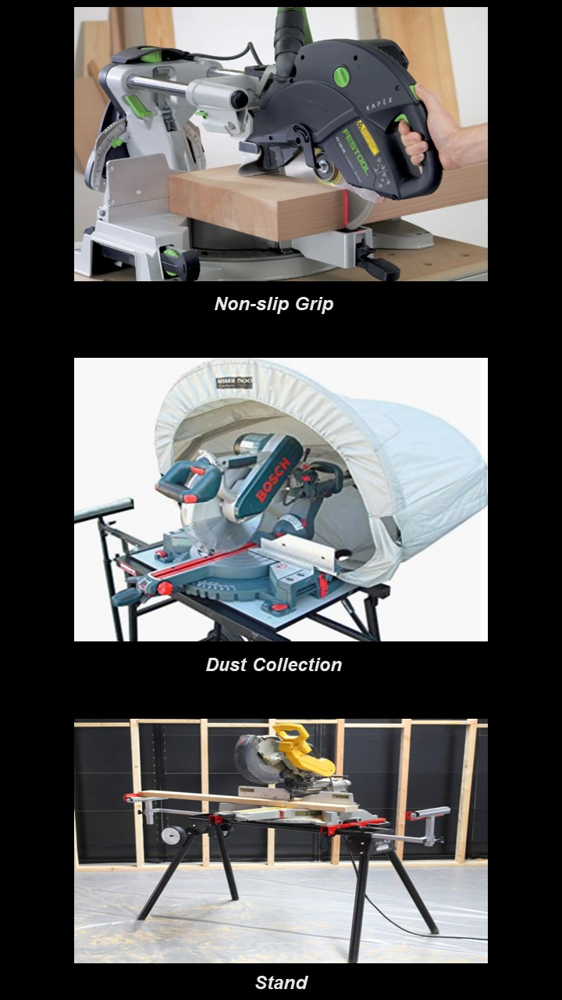

Additional Features

Laser Guide- Some miter saws have laser guides that mark a red or green line across the wood where the blade will cut. This is an excellent feature for DIYers and beginners to ensure the board is correctly positioned before cutting.
Depth Stop- A miter saw that comes with a depth stop allows the user to set the depth of the cut—similar to a radial arm saw. This allows the user to cut a groove in the material without cutting all the way through.
Sliding Fence- Sliding fences are built into some miter saws, and they pull out on both sides to allow the user to position the material securely along the fence.
Flip Fence- Flip fences come with locking stops, and the user can lock two or more stops on the fence and simply flip them up and out of the way to cut a different length. Flip fences are handy when the user needs to go back and forth between two or more lengths when cutting boards.
Non-slip Grip- Summer days can result in slippery grips on a miter saw handle. Some manufacturers now offer padded nonslip grips to reduce hand fatigue and allow for a better grasp.
Dust Collection- Miter saws tend to kick up sawdust, particularly when operated inside a workshop. To remedy this, two types of dust collection are available for miter saws. The first is a small bag designed to collect some of the dust that blows into it naturally as it comes off the blade. The second (and better) option is a dust-collection port that connects to the hose of a shop-type vacuum.
Stand- Many miter saws come with holes that allow the user to bolt them to the workshop table for stability, but a few come with miter saw stands that hold the saw securely when cutting.
Summary
There are many things to consider when purchasing a miter saw. It's important to weigh all options before breaking the bank. Do you homework to make the best informed decision.